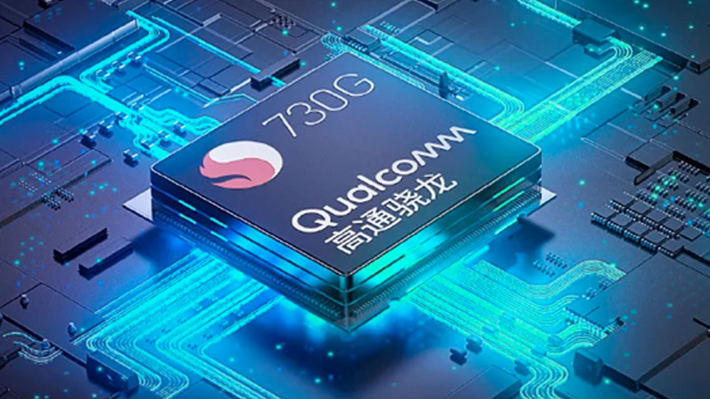

Xiaomi MI Note 10
|
Xiaomi menjelang akhr tahun 2019 ini membuat kejutan dengan memperkenalkan Xiaomi Mi CC9 Pro. Ya! Smartphone yang punya dukungan lima kamera belakang, di mana lensa utamanya memiliki resolusi 108 MP ini hanya tersedia di pasar Cina. Tidak hanya memanjakan penggemar smartphone mid-range di Cina dengan memperkenalkan Mi CC9 Pro, Xiaomi juga membuat kejutan di pasar Eropa dengan memperkenalkan Mi Note 10 dan Mi Note 10 Pro. Sama seperti Mi CC9 Pro, Mi Note 10 dan Mi Note 10 Pro juga punya lensa utama 108 MP.
Seperti telah disebutkan, Xiaomi meracik Mi Note 10 dan Mi Note 10 Pro dengan dukungan lima kamera belakang. Ya! Sama seperti yang dimiliki Mi CC9 Pro, di mana lensa utamanya memiliki resolusi 108 MP memakai sensor ISOCELL Bright HMX yang dikembangkan oleh Samsung. Hanya saja, Mi Note 10 Pro datang dengan kamera utama 108 MP dengan dukungan lensa 8P, sementara Mi Note 10 hanya lensa 7P. Ya! Mi Note 10 Pro sama persis dengan Mi CC9 Pro versi Eksklusif, sementara Mi Note 10 adalah versi standar dari Mi CC9 Pro. |
Dipasok chipset Snapdragon 730G
|
 |
|
Bisa dibilang, Mi Note 10 atau Mi Note 10 Pro adalah versi lain dari Mi CC9 Pro. Seperti yang telah disebutkan di awal, Mi CC9 Pro hadir untuk pasar Cina, sementara Mi Note 10 atau Mi Note 10 Pro dihadirkan oleh Xiaomi untuk pasar global dan saat ini sudah diperkenalkan di pasar Eropa. Sama seperti Mi CC9 Pro, Mi Note 10 juga ditenagai dengan chipset kelas menengah milik Qualcomm. Ya! Chipset tersebut adalah Snapdragon 730G. Begitu juga dengan Mi Note 10 Pro, smartphone ini tidak ditenagai chipset Snapdragon 855+ seperti rumor yang berkembang beberapa bulan belakangan ini.
|
| Tipe : | Smartphone , Phablet , Camera Phone , Bezel-less Phone |
|---|
12 MP, f/2.0, 50mm (telephoto), 1/2.55", 1.4µm, Dual Pixel PDAF, 2x optical zoom
8 MP, f/2.0, (telephoto), 1.0µm, PDAF, OIS, 3.7x optical zoom, 5x hybrid zoom
20 MP, f/2.2, 13mm (ultrawide), 1/2.8", 1.0µm
2 MP, f/2.4, (macro), 1/5.0", 1.75µm
Quad-LED dual-tone flash, HDR
5.0, A2DP, LE, aptX HD
Yes, with A-GPS, GLONASS, GALILEO, BDS
FM radio, recording
2.0, Type-C 1.0 reversible connector
Fingerprint (under display, optical), accelerometer, gyro, proximity, compass